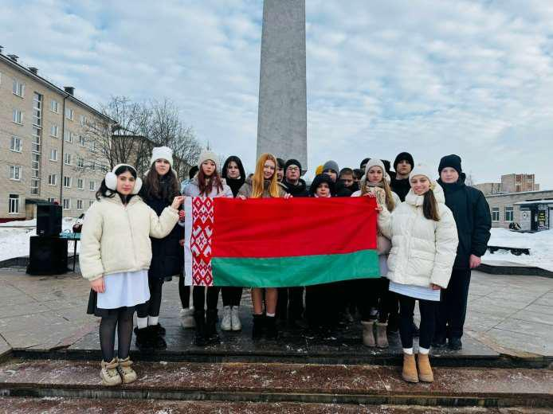
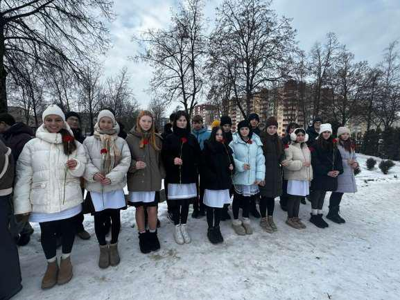
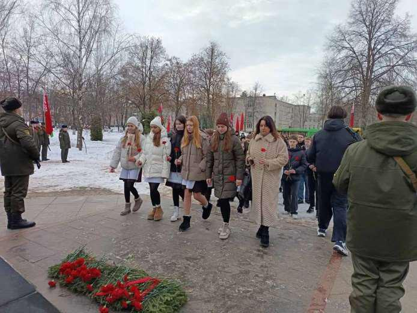
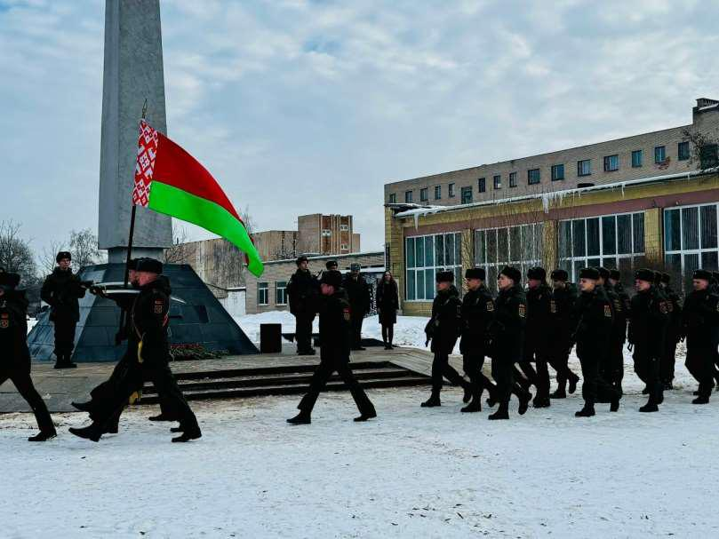

УЧАСТИЕ В МИТИНГЕ, ПОСВЯЩЕННОМ ДНЮ ЗАЩИТНИКОВ ОТЕЧЕСТВА И ВООРУЖЕННЫХ СИЛ
23 февраля – день, который символизирует мужество и патриотизм. В этот праздник мы чтим всех, кто на протяжении истории защищал нашу землю, а также тех, кто сегодня охраняет суверенитет и независимость Республики Беларусь. 23 февраля возложение цветов в дань памяти погибшим воинам прошло у обелиска «Жертвам фашизма», участие в котором приняли и наши гимназисты.



Во время мероприятия участники почтили память героев минутой молчания и вспомнили о подвиге многих поколений белорусов. Эти люди своим самоотверженным служением Родине, упорным трудом и верностью долгу внесли неоценимый вклад в развитие нашей страны, помогли ей стать сильнее и процветающей.
Мы гордимся историей нашего народа и бережно передаём память о его подвигах молодому поколению. Пусть примеры мужества и преданности Родине вдохновляют наших гимназистов на добрые дела и свершения во благо Беларуси!
